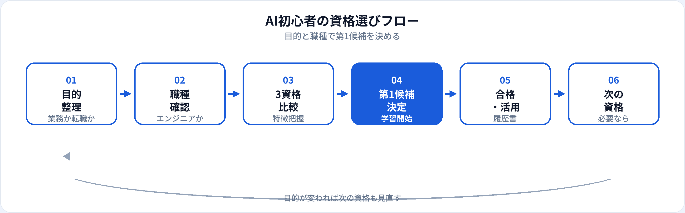

AI初心者が最初に迷うのは、「どの資格から始めればいいか」です。候補は多いですが、最初の1枚としてよく選ばれるのが生成AIパスポート・G検定・ITパスポートの3つです。本記事では、この3資格をキャリアの目的（業務活用・AI職・IT基礎）から比較し、選び方のフローと目的別の第一候補を2026年6月時点で整理します。職種別の第1候補一覧は職種別おすすめAI資格一覧、2資格間の詳細比較はG検定 vs 生成AIパスポートなど学習ガイドも併せて参照してください。
なぜ「最初の1つ」を決めるのか
資格は学習の区切りと履歴書・社内評価でのアピール材料として機能します。ただし、3つを同時に並走すると学習が分散し、どれも中途半端になりがちです。最初に1つに絞ることで、試験範囲を完走し、「合格→業務・転職への接続」まで一気通貫で進めやすくなります。
また、生成AI＝ChatGPTのようにサービス名と概念を混同している状態のまま学習を始めると、試験範囲とズレた理解が定着します。資格学習は、用語とリスク（ハルシネーション、著作権、個人情報）を整理する共通言語づくりにもなります。
試験対策はこちら
生成AIパスポート 試験対策 · G検定 試験対策 · 一問一答 TF-0001（生成AIの定義） · 一問一答 TF-003（機械学習とAI）
3つの資格をざっくり把握
生成AIパスポート
生成AIの業務活用・プロンプト・リスク管理が中心。60問・60分とコンパクト。非エンジニアの第一候補になりやすい。詳細は生成AIパスポートの概要。
G検定
AI・機械学習・ディープラーニングの基礎全般を問う。200問・120分。AIエンジニア・データ職志望の学習土台。詳細はG検定の概要。
ITパスポート
IPAの情報処理技術者試験（IP）。IT全般の基礎（ストラテジ・マネジメント・テクノロジ）。AIは範囲の一部。詳細はIPA公式（受験料・日程は公式で要確認）。
3資格比較表（7つの観点）
AI初心者が「最初の1枚」を選ぶときの観点で、3資格を並べました。受験料は2026年6月時点の目安です。最新は各主催の公式サイトで確認してください。
| 観点 | 生成AIパスポート | G検定 | ITパスポート |
|---|---|---|---|
| 焦点 | 生成AIの業務活用・リスク | AI/ML/DLの基礎全般 | IT全般（AI非中心） |
| 出題数・時間 | 60問・60分 | 200問・120分 | 100問・120分 |
| 学習時間目安 | 未経験で20〜40時間 | 未経験で80〜150時間 | 未経験で40〜80時間 |
| 向いている人 | 全職種・業務で生成AIを使う | AI/データ/エンジニア職志望 | IT用語・セキュリティ基礎から |
| キャリアでの位置づけ | 業務改善・社内推進の入口 | AI職・転職の学習証明 | 情報処理技術者の第一歩 |
| 難易度（体感） | 入門・短期取得向き | 入門〜中級・範囲が広い | 入門・3分野の広さ |
| 主催 | 生成AI活用普及協会（民間） | 日本ディープラーニング協会 | IPA（国家資格制度） |
ペア比較の深掘り：G検定 vs 生成AIパスポート · G検定 vs ITパスポート · 生成AIパスポート vs ITパスポート
資格選びのフロー

- ステップ1：目的を整理する 今すぐ業務で生成AIを使いたい → 生成AIパスポートを第一候補に。AIエンジニア・データ職へ転職が主目的 → G検定を第一候補に。IT用語自体がわからない → ITパスポートを第一候補に。
- ステップ2：職種・学習時間を確認する 非エンジニアで学習時間が限られる → 生成AIパスポート優先。Python実装も視野 → G検定優先。将来FE（基本情報）も視野 → ITパスポート優先。
- ステップ3：第1候補で学習を完走する 合格後、履歴書・社内報告・業務試行にすぐ接続する。資格取得で終わらせない。
- ステップ4：2つ目を検討する 目的が広がったタイミングで追加。詳細は2つ目以降の資格を参照。
目的別：最初におすすめの資格
業務で生成AIを使いたい → 生成AIパスポート
営業・企画・事務・人事など、プログラミングより業務改善が主目的なら生成AIパスポートが第一候補になりやすいです。プロンプト設計、出力の確認、著作権・個人情報の扱いなど、明日から使えるリテラシーが試験範囲の中心です。合格後の学習は生成AIパスポート取得後のロードマップを参照してください。
AIエンジニア・データ職を目指す → G検定
AIエンジニア、機械学習エンジニア、データサイエンティスト、データアナリストなど、AI/MLの概念理解が選考で問われる職種ならG検定が学習の土台になります。ただしG検定はコーディング試験ではないため、ポートフォリオとセットがほぼ必須です。活かし方はG検定のキャリアへの活かし方を参照。
IT基礎から固めたい → ITパスポート
ネットワーク、セキュリティ、プロジェクト管理などIT全般の用語に不安がある場合、ITパスポートで土台を作ってから生成AIパスポートやG検定に進む流れが有効です。情報処理技術者試験の入口として、社内のIT研修とも相性がよい資格です。
| あなたの状況 | 第一候補 | 理由（短く） |
|---|---|---|
| 非エンジニア・業務活用が主 | 生成AIパスポート | 学習時間が短く、実務直結 |
| AI/データ職への転職・未経験学習 | G検定 | ML/DLの体系的理解の証明 |
| IT用語・セキュリティが不安 | ITパスポート | 国家資格制度の入門 |
| 文系・非エンジニアで転職も視野 | 生成AIパスポート → G検定 | 業務→学習意欲の順で説明しやすい |
文系からのルート全体像は文系からAI職へキャリアチェンジ、文系社会人のAI資格選びも参照してください。
合格後のキャリアへのつなげ方
資格は「取って終わり」ではなく、次の行動のトリガーとして使います。
生成AIパスポート合格後
社内で提案書・議事録・FAQ作成に生成AIを試験導入。履歴書には「業務改善の具体例」とセットで記載。
G検定合格後
狙う職種を1つに絞り、Python/SQL/ポートフォリオを1つ完成。面接では学んだ概念と成果物を接続して話す。
ITパスポート合格後
社内DX・セキュリティ研修の前提知識としてアピール。続けて生成AIパスポートまたは基本情報（FE）を視野に。
履歴書の書き方はAI資格を履歴書に書く方法、学習順序の全体像は未経験からAI職への学習順序を参照してください。
資格だけでは足りない点
| 資格の強み | 別途必要になりやすいもの |
|---|---|
| 学習完了の客観的証明 | 業務・転職での再現可能な成果 |
| 用語・リスクの共通理解 | ツール操作の実践経験（生成AI） |
| 履歴書・社内評価のアピール | AI職ならGitHub・ポートフォリオ |
| 社内研修の前提知識 | 部署固有のドメイン知識 |
特にG検定は「知識はあるが手を動かしていない」印象を与えないよう、合格前後で小さな実装や分析課題を1つ公開しておくと効果的です。
2つ目以降の資格の考え方
3つ全部が必須ではありません。第1資格合格後、目的に応じて次を選びます。
-
生成AIパスポート → G検定
業務活用からAI/データ職へのキャリアチェンジを視野に。学習の深さを示したいとき。
-
生成AIパスポート → ITパスポート
生成AI活用後、IT基盤・セキュリティ・プロジェクト管理の理解を広げたいとき。
-
ITパスポート → 生成AIパスポート
IT土台の後に、生成AIの実務リテラシーを足す定番ルート。
-
G検定 → 生成AIパスポート
ML基礎の後に、LLM・RAG・業務リスクを補完。生成AIエンジニア志向なら生成AIエンジニアも参照。
ダブル取得の戦略はG検定・生成AIパスポートのダブル取得も参照してください。
よくある質問
生成AIパスポートとG検定はどちらを先に？
エンジニア・データ職ならG検定、非エンジニアの業務活用なら生成AIパスポートを先にする整理が一般的です。詳細はG検定 vs 生成AIパスポートを参照。
ITパスポートはAI学習に必要？
AI特化ではありませんが、IT全般の用語が不安なら土台として有用です。生成AI・MLの専門性は他2資格で補います。
3つ全部取る必要がある？
必須ではありません。目的に合った1つから始め、余力とキャリアの方向で2つ目以降を検討するのが現実的です。